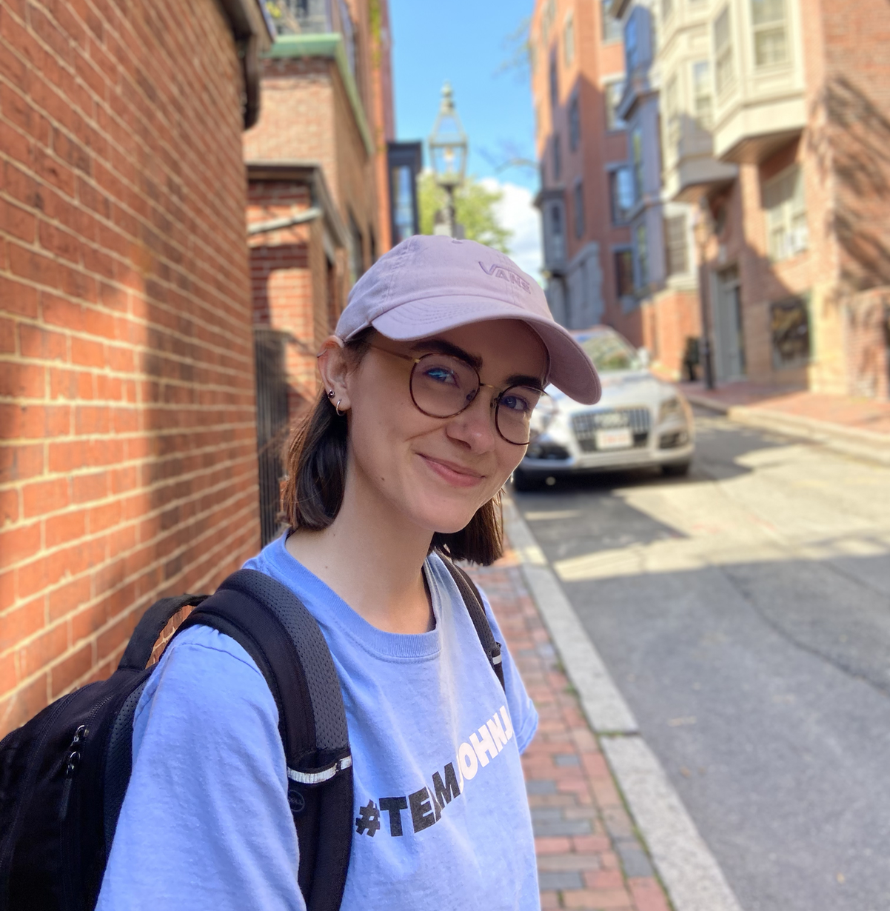

Cassandra Marcussen
I am a senior at Columbia University studying theoretical computer science and mathematics. My email is cem2242-at-columbia-dot-edu.
Academic Interests
I am interested in theoretical computer science, probability theory, and discrete mathematics and combinatorics. Some of my research interests are: stochastic processes, complexity theory, information theory, and property testing.
Research and Work Experience
-
Senior Thesis and Independent Research Projects in Theoretical Computer Science (since January 2021)
- Senior Thesis: Distribution Testing with Subcube Conditional Query Access
- Independent Research Projects: Improving the Query Complexity of Tolerant k-Junta Testing, Distribution- Free Decision List Testing
- Advisor: Xi Chen
-
Mathematics Researcher at the SMALL REU in Mathematics at Williams College (Summer 2021)
- Project: Algorithms and Complexity in Chip-Firing Games and Graph Gonality
- Advisor: Ralph Morrison
-
Research Assistant in Artificial Intelligence (January 2020 to August 2021)
- Project: Running Predictor of Preterm Birth using Machine Learning Techniques
- Advisor: Ansaf Salleb-Aouissi
-
Independent Developer in the Microsoft Research Reinforcement Learning Open Source Fest
-
STEP Software Engineering Intern at Google (Summer 2020)
-
AFE Software Engineering Intern at Amazon (Summer 2019)
Teaching
As a Teaching Assistant, I grade homeworks and hold office hours and recitations. I have served as a Teaching Assistant for the following courses at Columbia:
- Analyis of Algorithms I (CSOR 4251) with Professor Xi Chen (Summer 2021) and Professor Alexandr Andoni (Fall 2021)
- Artificial Intelligence (COMS 4701) with Professor Ansaf Salleb-Aouissi (Spring 2021)
- Discrete Mathematics: Combinatorics and Graph Theory (COMS 3203) with Professor Ansaf Salleb-Aouissi (Fall 2020)
I also lectured and served as a TA for the Undergraduate Math Society's Introduction to Proofs workshop in
Fall 2020 and Fall 2021.
. This is a 4-week workshop for undergraduate students that teaches how to
write and construct proofs, run by the Undergraduate Math Society.
Pre-Prints and Technical Reports
Uniform scrambles on graphs [ARXIV], 2021.
L. Cenek, L. Ferguson, E. Gebre, C. Marcussen, J. Meintjes, R. Morrison, L. Ostermeyer, S. Ramakrishna.
Data Preparation of the nuMoM2b Dataset [MEDRXIV], 2021.
A. Goretsky, A. Dmitrienko, I. Tang, N. Lari, O. Kunhardt, R. Rashid Khan, C. Marcussen, A. Catto, D. Mallia, A. Leshchenko, A. Lin, A. Raja, A. Salleb-Aouissi, Itsik Pe’er, R. Wapner, C. Gyamfi-Bannerman.
Papers in Preparation
- Higher gonalities of graphs
L. Cenek, L. Ferguson, E. Gebre, C. Marcussen, J. Meintjes, R. Morrison, L. Ostermeyer, S. Ramakrishna.
- The gonality of circulant graphs
L. Cenek, L. Ferguson, E. Gebre, C. Marcussen, J. Meintjes, R. Morrison, L. Ostermeyer, S. Ramakrishna.
- A handbook of graph gonality and graph operations
L. Cenek, L. Ferguson, E. Gebre, C. Marcussen, J. Meintjes, R. Morrison, L. Ostermeyer, S. Ramakrishna.
- Scramble number and tree-cut decompositions
L. Cenek, L. Ferguson, E. Gebre, C. Marcussen, J. Meintjes, R. Morrison, L. Ostermeyer, S. Ramakrishna.
Seminars, Reading Groups, and Organizations
Conferences